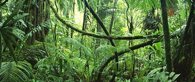

Quem somos
Com o objetivo de auxiliar do pequeno ao grande empreendedor, a TM Consultoria Ambiental está apta a prestar serviços de engenharia, assessoria, consultoria e perícias no setor de meio ambiente e florestal.
Nossa missão é adequar o seu negócio às práticas de sustentabilidade e dar todo o apoio técnico ao empreendedor nos processos junto aos órgãos ambientais.
Atuação
Estamos prontos para atuar em inventários florestais, licenciamentos ambientais, perícias e assessoria ambiental, seja em área urbana ou rural.
Contamos com a parceria de profissionais de diversas áreas para encontrar a melhor solução para você com honestidade e preço compatível com o serviço.
Contate-nos!
Serviços

Realizamos serviços de:
• Licenciamento Ambiental
• Inventários Florestais
• Levantamentos Topográficos
• Fotografia aérea e mapeamentos
• Sistemas de Gestão Ambiental (SGA)
• Perícias em meio ambiente
• Projeto e Execução de PTRF/PRAD
• Reguralarização Ambiental
• Planejamento Florestal